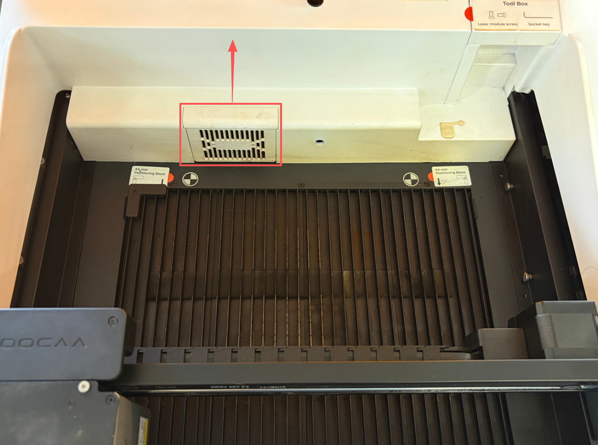

Identify the built-in filter
This guide concerns the filter held in the removable white grille housing at the rear of NOVA. An optional external purifier filter is a separate component. A maintenance reminder or visible residue calls for inspection; cleaning the built-in filter does not automatically mean that every filter in the system should be washed.

Prepare and remove it safely
Stop processing, switch off, disconnect power and allow the laser module to cool. Use the illustrated filter guide to identify the housing.
- With power disconnected, hold the gantry at both sides and move it toward the front as illustrated, stopping if it resists.
- Wipe the specified rear interior surfaces using compatible, lightly moistened wipes without dripping liquid into openings.
- Lift the rear filter housing straight upward without prying or forceful twisting.
- Remove the filter from its housing and take it outside the machine for cleaning.
Wash the removed filter, then dry it throughout
The official procedure permits gently rinsing this removed built-in filter with clean water. Do not rinse the machine or electrical parts, and do not wring the filter. Blot surface water, then let it air-dry completely in a clean ventilated place. Surface dryness alone is insufficient. Dry the housing separately and remove loose paper fibers.
Reinstall and inspect the airflow
Fit the fully dry filter flat, without folds or curled edges, and seat the housing correctly. Remove all wipes and tools before restoring power. A torn, deformed or still severely clogged filter needs a compatible replacement. Verify normal operation and airflow; reset this maintenance timer only after cleaning, drying and reinstallation are actually complete.